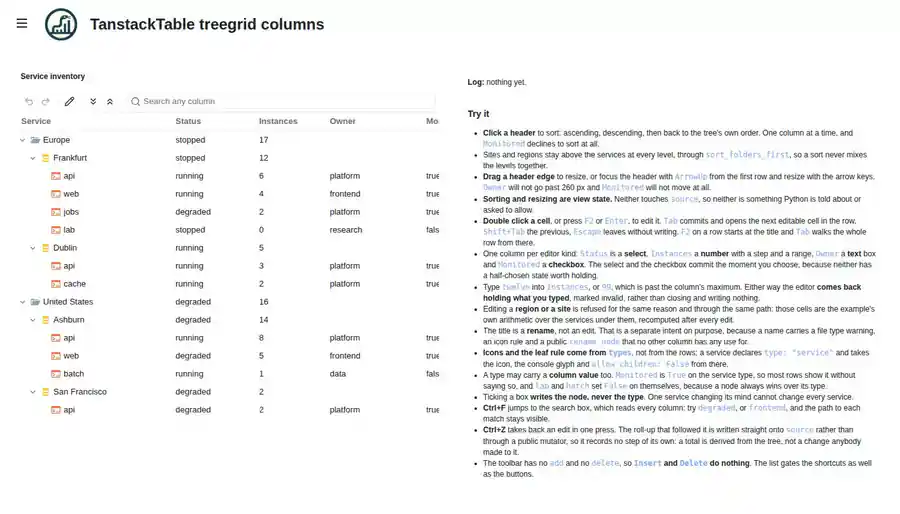

Treegrid - columns and cell editors¶

Source: examples/panels/tanstack/table/tst_treegrid_columns.py
Test: tests/panels/tanstack/table/examples/test_tst_treegrid_columns.py
A service inventory: regions, sites and the services under them. The tree’s shape never changes here - no drag, no add, no delete. What changes is the cells, so this is the grid half of the panel on its own: one column per editor kind, node types supplying defaults, and a veto that keeps computed rows read only.
Features on display¶
Five columns, one per editor kind:
Statusa select,Instancesa number withstep,minandmax,Ownera text box,Monitoreda checkbox, plus the tree column.Sorting cycles ascending, descending, then the tree’s own order.
Monitoreddeclines withsortable: False.sort_folders_firstkeeps sites and regions above services at every level.Resizing bounded by
min_width/max_width;Monitoreddeclines withresizable: False.Node types:
region,siteandservicesupplyicon,allow_childrenand even a column value (monitored), and a node always wins over its type.A refused edit on a group row reopens the editor holding what was typed, marked
aria-invalid.Roll-up arithmetic written straight onto
source, so oneCtrl+Zreaches the edit rather than the totals.
The wiring¶
columns = [
{"id": "title", "header": "Service", "width": 240, "min_width": 160},
{
"id": "status",
"header": "Status",
"width": 130,
"min_width": 100,
"editable": True,
"editor": "select",
"choices": STATUSES,
},
{
"id": "instances",
"header": "Instances",
"width": 110,
"editable": True,
"editor": "number",
"step": 1,
"min": 0,
"max": 64,
},
{"id": "owner", "header": "Owner", "width": 150, "editable": True, "max_width": 260},
{
"id": "monitored",
"header": "Monitored",
"width": 110,
"editable": True,
"editor": "checkbox",
"sortable": False,
"resizable": False,
},
]
table = TanstackTable(
source=source,
columns=columns,
types=TYPES,
options={
"aria_label": "Service inventory",
"expand_all": True,
"enable_dnd": False,
"select_mode": "single",
"show_checkboxes": False,
"sort_folders_first": True,
"search_label": "Search any column",
"toolbar": ["undo", "redo", "|", "rename", "|", "expand-all", "collapse-all", "|", "search"],
},
event_callback=on_event,
action_callback=allow_action,
sizing_mode="stretch_both",
)
Key points:
TYPESdeclaresicon,allow_childrenandmonitoredonce per kind instead of once per row.allow_actionreturnsFalsefor anediton a row that has children, because those cells are the example’s own arithmetic.on_eventrecomputes the totals after an edit that landed, writingtable.sourcedirectly so the roll-up records no undo step of its own.The
toolbarlist carries nonew-folder,new-fileordelete, and because the list gates the shortcuts too,InsertandDeletedo nothing at all here.
How the test exercises it¶
Render: the five headers appear in order, and
aria-rowcountequals the node count plus the header row.One test per editor kind: the select and the checkbox commit the moment you choose; the number column lands in
sourceas anint, not the string that was typed; the text box writes onEnter.Types: ticking
lab’s checkbox writes that node and leavesTYPES["service"]["monitored"]untouched.Roll-up: an edit propagates into the site and the region above it, and the group’s
ownerstays blank.Undo: one
Ctrl+Zreaches the edit past the roll-up, and the tree it lands on is consistent.Veto: an edit on a group row leaves
sourcealone, reopens the editor witharia-invalid="true"holding the rejected value, and shows up in the example’s log.
Run it live¶
This example runs entirely in your browser via Pyodide. The first load downloads packages, so give it a few seconds.
See also¶
TanstackTable - the panel guide
VFS explorer - two panes and external file drop - the other half of the panel: a tree whose shape does change
Big tree - one node to a million, and what each size costs - what a large tree costs, from one node to a million
Filesystem browser - lazy loading from a real backend - lazy loading from a real directory tree